G07 ( 方角 )
当工作在 G07 ( 方角 ) 时， CNC 直到到达当前程序段中编写的位置才执行下面的程序段。
当轴从编程的位置到达 "INPOSW" （在位置区或死区）内时，CNC 认为编程的位置已经到达。
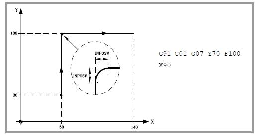
理论和实际轮廓一致，得到方角，如图中所示。
功能 G07 是模态的，与 G05, G50 和 G51 不兼容。功能 G07 可以编写成 G7。
上电后，在执行了 M02, M30 或 EMERGENCY （急停）或 RESET （复位）后， CNC 采用代码 G05 或 G07 取决于通用机床参数 “ICORNER” 的设置。
当工作在 G05 ( 圆角 ) 方式时， CNC 在当前程序段的理论插补一结束就开始执行程序中的下一段。它不等待轴到达编写的物理位置。CNC 开始执行下一段程序时离编写的程序位置的距离取决于轴的实际进给率。
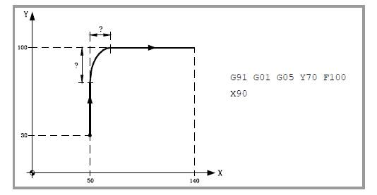
通过该功能，可以获得圆角，如图所示：
理论和实际轮廓之间的差别取决于程序的进给率 F 的数值。F 的数值越大，则两个轮廓的差别就越大。
功能 G05 是模态的，与 G07, G50 和 G51 不兼容。功能 G05 可以编写成 G5。
上电后，在执行了 M02, M30 或 EMERGENCY （急停）或 RESET （复位）后， CNC 采用代码 G05 或 G07 取决于通用机床参数 “ICORNER” 的设置。
当工作在 G50 ( 受控圆角 ) 时， 一旦当前程序段的理论插补完成， CNC 将等待轴进入由机床参数 "INPOSW2" 定义的区域，并且开始执行下面的程序段。
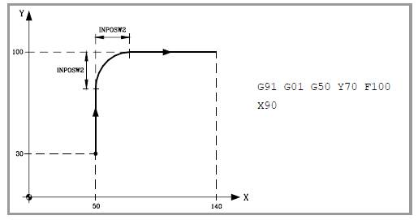
功能 G50 保证理论和实际路径之间的差别小于由机床参数 "INPOSW2" 设定的值。
另一方面，当工作在 G05 时， 理论和实际轮廓之间的差别取决于程序的进给率 F 的数值。F 的数值越大，这两个轮廓的差别越大。
功能 G50 是模态的，与 G05, G07 和 G51 不兼容。
上电后，在执行了 M02, M30 或 EMERGENCY （急停）或 RESET （复位）后， CNC 采用代码 G05 或 G07 取决于通用机床参数 “ICORNER” 的设置。
通常，当程序中包含移动量很小的程序段 (CAM, 数字化 , 等 ) 时，运行往往是很慢的。利用预读功能，对于这种类型程序的高速加工成为可能。
预读功能预先分析被加工的路径 （最多 75 段程序）为了计算每段路径的最大进给率。对程序中非常小的移动量这个功能提供了更平滑和更快速的加工，甚至是微米建议在使用 LOOK-AHEAD （预读）功能时，系统应采用带有 CPU-TURBO 板的选项。 带有 “预读”功能操作时，最好调整轴使其跟随误差尽量小，因为轮廓误差将至少等于最小跟随误差。
编程格式
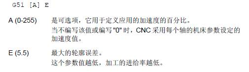
参数 "A" 允许使用标准工作加速度，当执行具有预读功能时，使用其他加速度。
图像镜像 (G10, G11. G12, G13, G14) |
下列图像镜像功能有效：
G10: 取消图像镜像
G11: 相对于 X 轴的图像镜像
G12: 相对于 Y 轴的图像镜像
G13: 相对于 Z 轴的图像镜像
G14: 相对于任何轴 (X..C) 的图像镜像或同时几个轴
例如：
G14 W
G14 X Z A B
当 CNC 工作在镜像模式时，它在执行镜像选择的轴的运动时，符号发生变化。
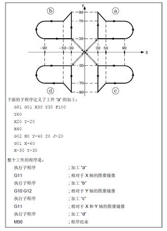
功能 G11， G12， G13 和 G14 是模态的并且和 G10 不兼容。
G11, G12 和 G13 可以编写在同一程序段内，因为它们互不兼容，功能 G14 必须编写
在单独的程序段。
如果功能 G73 ( 模型旋转 ) 在镜像程序中也有效， CNC 首先进行镜像，然后 进行
模式旋转。
如果在某个镜像功能 (G11, G12, G13 或 G14) 有效时，用 G92 设置了新的坐标零点，
该新坐标零点不受镜像功能的影响。
上电后，在执行了 M02, M30 或 EMERGENCY （急停）或 RESET （复位）后， CNC 采用代码 G10。
通常，当程序中包含移动量很小的程序段 (CAM, 数字化 , 等 ) 时，运行往往是很慢的。利用预读功能，对于这种类型程序的高速加工成为可能。
预读功能预先分析被加工的路径 （最多 75 段程序）为了计算每段路径的最大进给率。对程序中非常小的移动量这个功能提供了更平滑和更快速的加工，甚至是微米建议在使用 LOOK-AHEAD （预读）功能时，系统应采用带有 CPU-TURBO 板的选项。 带有 “预读”功能操作时，最好调整轴使其跟随误差尽量小，因为轮廓误差将至少等于最小跟随误差。
编程格式
参数 "A" 允许使用标准工作加速度，当执行具有预读功能时，使用其他加速度。
通过使用功能 G72 ，可以对工件进行放大或缩小。
这样一来，可以用同一个程序制造一系列形状相似，大小不同的零件。
功能 G72 应单独编写在一个程序段中，有两种编写 G72 的格式：
. 缩放比例因子应用到所有的轴。
. 缩放比列因子应用到一根或多根轴。
功能 G73 可以用于旋转坐标系统，将坐标原点或编写的旋转中心作为当前的旋转中心。
定义旋转的格式如下：
G73 Q+/5.5 I±5.5 J±5.5
其中：
Q: 以度为单位表示旋转的角度
I, J: 可选项，分别定义旋转中心的横坐标和纵坐标。如果没有定义，坐标
原点将作为旋转中心。
"I" 和 "J" 的数值用绝对坐标定义，相对于工作平面的坐标原点。这些坐标受有效的缩放比列因子和图像镜像的影响。
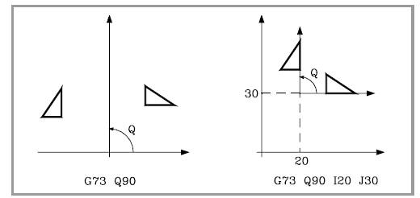
应记住 G73 是增量的，即编写的不同的 Q 进行相加
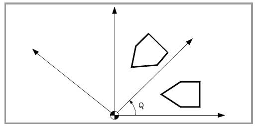
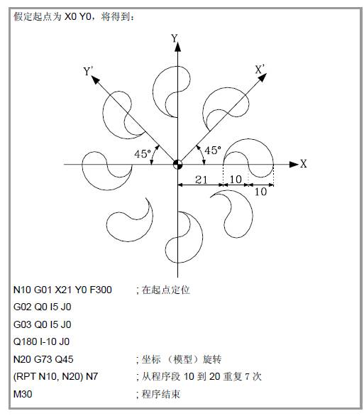
如果在进行坐标旋转的程序中，有镜像功能， CNC 将首先进行镜像，然后旋转。
模型旋转功能可以通过编写 G72 （它自己，不带任何角度值）或通过 G16, G17,
G18, 或 G19, 或在上电，执行 M02, M30 或在急停或复位后取消。
功能 G77 允许选择主动轴和从动轴。
编程格式如下：
G77 < 轴 1 > < 轴 2 > < 轴 3 > < 轴 4 > < 轴 5>
其中 < 轴 2 > ，< 轴 3 >， < 轴 4 > 和 < 轴 5> 表示是期望偶合到主动轴 < 轴
1 > 上的从动轴。必须定义 < 轴 1 > 和 < 轴 2 >, 其他的轴是可选的。
例如：
G77 X Y U ; 将 Y 和 U 耦合到 X 轴
在进行电子轴偶合时，必须遵守下列规则：
. 可以使用一个或两个不同的电子轴耦合。
G77 X Y U ; 将 Y 和 U 轴耦合到 X 轴
G77 V Z ; 将 Z 轴耦合到 V 轴
. 不能将一根轴同时耦合到其它两根轴上。
G77 V Y ; 将 Y 轴耦合到 V 轴
G77 X Y ; 给出错误信号，因为 Y 轴被耦合到了 V 轴
. 可以连续将几根轴耦合到一根轴上。
G77 X Z ; 将 Z 轴耦合到 X 轴
G77 X U ; 将 U 轴耦合到 X 轴 ―> Z U 被耦合到 X 轴。
G77 X Y ; 将 Y 轴耦合到 X 轴 ―> Y Z U 被耦合到 X 轴。
. 一对互相耦合的轴不能再耦合到其它的轴。
G77 Y U ; 将 U 轴耦合到 Y 轴
G77 X Y ; 给出错误信息，因为 Y 轴被耦合到了 U 轴
功能 G78 可以解除所有偶合的轴，或只解除指定的轴。
例如：
G77 X Y U ; 将 Y 和 U 轴耦合到 X 轴
G77 V Z ; 将 Z 轴耦合到 V 轴
G78 Y ; 解除 Y 轴，但 U 对 X 和 Z 对 V 保持耦合。
G78 ; 解除所有的轴
G78 解除所有耦合的轴
利用该功能，可以在拥有两个工作台的机床上，使用一个工件程序在两个工作台上加工相同的工件。
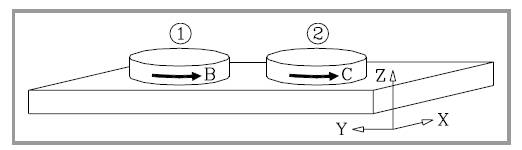
利用功能 G28 轴可以从一根切换到另一根，这样以来，G28 后与第一根轴相关的所有运动将发生在 G28 后的第二根轴上，反之亦然。
编程格式：
G28 ( 轴 1) ( 轴 2)
要取消切换，执行功能 G29，后接要切换回来的轴，同时最多可以切换 3 对轴。
在下列情况下不能切换主要的轴：跟踪时，功能 G48 或 G49 有效时， 或在车床上"C" 轴有效时。
在 G48或G49 无效时，在上电后，在执行了M30后，或急停或复位后，轴被切换回来。
例如，让我们假定工件程序是为工作台 1 定义的。
1. 在工作台 1 上执行零件程序。
2. G28 BC，切换 "B" 和 "C" 轴。
3. 零点偏置在工作台 2 上加工。
4. 执行工件程序。
. 将在工作台 2 上加工。
. 同时，用新的加工代替工作台 1 上的加工。
5. G29 B， 将 "B" 和 "C" 轴切换回来。
6. 取消零点偏置在工作台 1 上加工。
7. 执行工件程序。
. 将在工作台 1 上加工。
. 同时，用新的加工代替工作台 2 上的加工
在正常的铣削操作中，有必要计算和定义刀具的路径，考虑它的半径，以便达到要求的工件尺寸。
刀具半径补偿允许直接编写工件轮廓和刀具半径不必考虑刀具的尺寸。
CNC 根据工件轮廓和与该刀具对应的存储在刀具偏置表中的半径值自动计算刀具路径。
这里有三种用于刀具半径补偿的准备功能：
G40：取消刀具半径补偿
G41：左手刀具半径补偿
G42：右手刀具半径补偿
G41 刀具在零件的左边，取决于加工方向。
G42 刀具在零件的右边，取决于加工方向。
刀具值 R, L, I, K 在开始加工前要存储在刀具偏置表中，或在程序的开始通过变量 TOR, TOL, TOI, TOK 加载。
一旦通过 G16, G17, G18, 或 G19 选择了补偿所施加的平面， G41 或 G42 开始起作用，通过代码 D 选择刀具偏置值，或通过所选择刀具的刀具表显示刀具偏置。
功能 G41 和 G42 是模态的，它们不互相兼容。它们被 G40, G04 ( 中断准备程序段,G53 ( 相对于机床零点编程 ), G74 ( 零点搜索 ), 加工固定循环 ( G81,G82, G83, G84, G85, G86, G87, G88, G89) 及在上电，执行了 M02, M30 或 EMERGENCY （急停）或 RESET （复位）后被取消
该循环完成连续的钻削加工直到达到最终的编程坐标。在每次钻削后，刀具退回固定的量，可以选择每次 J 的钻入量，它退回到参考平面。在每次钻削后，可以编写停顿。
在笛卡尔坐标系工作时，程序段的基本结构如下：
G69 G98/G99 X Y Z I B C D H J K L R
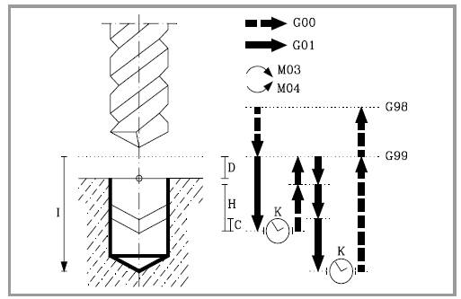
[ G98/G99 ] 退回平面
G98 一旦孔钻削完成，刀具退回到初始平面。
G99 一旦孔钻削完成，刀具退回到参考平面。
[ X/Y±5.5 ] 加工点坐标
是可选项，用于定义主平面的轴运动到刀具的加工点。
该点可以在笛卡尔坐标系或极坐标系编写，根据机床当时用 G90 或 G91，该坐标可以是绝对坐标或增量坐标。
[ Z±5.5 ] 参考平面
定义参考平面的坐标。可以用绝对坐标或增量坐标编写，在这种情况下是相对于初始平面的。如果没有编写， CNC 将采用刀具的当前位置作为参考平面。
[ I±5.5 ] 钻削深度
定义总的钻削深度。它可以用绝对坐标或增量坐标编写，既然这样将是相对于提到的工件表面。
[ B5.5 ] 钻削步长
定义沿纵向轴到主平面的钻削步长
[ C5.5 ] 接近前一次钻削
定义从前一次钻削，纵向轴快速移动（G00）多大的距离接近工件开始下一次钻削。
如果没有编写，将采用 1 mm 。如果编写了数值 0， CNC 将显示相应的错误。
[ D5.5 ] 参考平面
定义参考平面和要进行钻削的工件表面之间的距离。
在第一次钻削中，该数值将加在 B 上，如果没有编写，将采用数值 0。
[ H±5.5 ] 钻削后退回
在每次钻削后，纵向轴快速 (G00) 返回的距离或坐标位置。
"J" 不是 "0" 表示距离，如果 "J=0" 表示退回的位置或绝对位置。
当没有编写时，纵向轴将返回到参考平面。
[ J4 ] 钻削多次后退回到开始平面
定义在钻削多少次后，刀具以G00返回到参考平面。可以编写 0 和 9999之间的数值。
当没有编写或编写的数值为 "0" 时，在每次钻削后返回到由 H 指定的位置。

. 当 "J" 大于 1，在每次钻入后，刀具返回由 "H" 指定的距离，每次步长为 "J" 到参
考平面 (RP)。
. 当 J1，每次钻入后它将返回到参考平面 (RP)。
. 当 J0，它将返回到 H 指定的下降的位置。
[ K5 ] 停顿
定义在每次钻入后到开始退回的停顿时间， 以百分之一秒为单位。如果没有编写，CNC 将采用 "K0"
[ L5.5 ] 最小钻削的步距
定义钻入的最小值，该参数用非 1 的 "R" 值，如果没有编写或编写了数值 0，它将采用数值 1 mm。
[ R5.5 ] 减少钻削步长的比例因子
减小钻削步长（步距） "B" 的比例因子，如果没有编写或编写了数值 0, 它将采用数值 1 。
如果 R 等于 1, 所有的钻削步长将相等，即为编写的 "B" 值。
如果 R 不等于 1, 第一次钻入步长为 "B"，第二次为 “R B”，第三次为 “R (RB)” 依次类推，换句话说，从第二次钻入后 , 新的钻入步长为因子 R 和前一步长的乘积。
如果所选择的 R 不是 1， CNC 将不允许步长小于编写的 L
在正常的铣削操作中，有必要计算和定义刀具的路径，考虑它的半径，以便达到要求的工件尺寸。
刀具半径补偿允许直接编写工件轮廓和刀具半径不必考虑刀具的尺寸。
CNC 根据工件轮廓和与该刀具对应的存储在刀具偏置表中的半径值自动计算刀具路径。
这里有三种用于刀具半径补偿的准备功能：
G40：取消刀具半径补偿
G41：左手刀具半径补偿
G42：右手刀具半径补偿
G41 刀具在零件的左边，取决于加工方向。
G42 刀具在零件的右边，取决于加工方向。
刀具值 R, L, I, K 在开始加工前要存储在刀具偏置表中，或在程序的开始通过变量 TOR, TOL, TOI, TOK 加载。
一旦通过 G16, G17, G18, 或 G19 选择了补偿所施加的平面， G41 或 G42 开始起作用，通过代码 D 选择刀具偏置值，或通过所选择刀具的刀具表显示刀具偏置。
功能 G41 和 G42 是模态的，它们不互相兼容。它们被 G40, G04 ( 中断准备程序段,G53 ( 相对于机床零点编程 ), G74 ( 零点搜索 ), 加工固定循环 ( G81,G82, G83, G84, G85, G86, G87, G88, G89) 及在上电，执行了 M02, M30 或 EMERGENCY （急停）或 RESET （复位）后被取消
利用该功能可以补偿编程的刀具长度和实际使用的刀具长度之间的差值。
用 功能 G15 说明刀具补偿所施加的轴，或缺省时，施加在垂直于主平面的轴。
如果是 G17，刀具补偿在 Z 轴。
如果是 G18，刀具补偿在 Y 轴。
如果是 G19，刀具补偿在 X 轴。
无论何时编写了 G17, G18 或 G19 ， CNC 假定新的纵轴 ( 施加刀具补偿的轴 ) 是垂直于所选择的平面的。
另一方面，如果在功能 G17, G18 或 G19 有效时执行功能 G15，新的纵轴 ( 用 G15选择的 ) 将代替前面的轴。
用于长度补偿的功能代码如下：
G43：激活刀具长度补偿。
G44: 取消刀具长度补偿。
功能 G43 只表示施加纵向补偿，CNC 在纵向轴 ( 垂直轴 ) 开始移动时施加补偿。
该循环完成连续的钻削加工直到达到最终的编程坐标。在每次钻削后，刀具退回固定的量，可以选择每次 J 的钻入量，它退回到参考平面。在每次钻削后，可以编写停顿。
在笛卡尔坐标系工作时，程序段的基本结构如下：
G69 G98/G99 X Y Z I B C D H J K L R

[ G98/G99 ] 退回平面
G98 一旦孔钻削完成，刀具退回到初始平面。
G99 一旦孔钻削完成，刀具退回到参考平面。
[ X/Y±5.5 ] 加工点坐标
是可选项，用于定义主平面的轴运动到刀具的加工点。
该点可以在笛卡尔坐标系或极坐标系编写，根据机床当时用 G90 或 G91，该坐标可以是绝对坐标或增量坐标。
[ Z±5.5 ] 参考平面
定义参考平面的坐标。可以用绝对坐标或增量坐标编写，在这种情况下是相对于初始平面的。如果没有编写， CNC 将采用刀具的当前位置作为参考平面。
[ I±5.5 ] 钻削深度
定义总的钻削深度。它可以用绝对坐标或增量坐标编写，既然这样将是相对于提到的工件表面。
[ B5.5 ] 钻削步长
定义沿纵向轴到主平面的钻削步长
[ C5.5 ] 接近前一次钻削
定义从前一次钻削，纵向轴快速移动（G00）多大的距离接近工件开始下一次钻削。
如果没有编写，将采用 1 mm 。如果编写了数值 0， CNC 将显示相应的错误。
[ D5.5 ] 参考平面
定义参考平面和要进行钻削的工件表面之间的距离。
在第一次钻削中，该数值将加在 B 上，如果没有编写，将采用数值 0。
[ H±5.5 ] 钻削后退回
在每次钻削后，纵向轴快速 (G00) 返回的距离或坐标位置。
"J" 不是 "0" 表示距离，如果 "J=0" 表示退回的位置或绝对位置。
当没有编写时，纵向轴将返回到参考平面。
[ J4 ] 钻削多次后退回到开始平面
定义在钻削多少次后，刀具以G00返回到参考平面。可以编写 0 和 9999之间的数值。
当没有编写或编写的数值为 "0" 时，在每次钻削后返回到由 H 指定的位置。
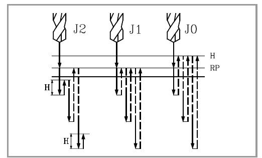
. 当 "J" 大于 1，在每次钻入后，刀具返回由 "H" 指定的距离，每次步长为 "J" 到参
考平面 (RP)。
. 当 J1，每次钻入后它将返回到参考平面 (RP)。
. 当 J0，它将返回到 H 指定的下降的位置。
[ K5 ] 停顿
定义在每次钻入后到开始退回的停顿时间， 以百分之一秒为单位。如果没有编写，CNC 将采用 "K0"
[ L5.5 ] 最小钻削的步距
定义钻入的最小值，该参数用非 1 的 "R" 值，如果没有编写或编写了数值 0，它将采用数值 1 mm。
[ R5.5 ] 减少钻削步长的比例因子
减小钻削步长（步距） "B" 的比例因子，如果没有编写或编写了数值 0, 它将采用数值 1 。
如果 R 等于 1, 所有的钻削步长将相等，即为编写的 "B" 值。
如果 R 不等于 1, 第一次钻入步长为 "B"，第二次为 “R B”，第三次为 “R (RB)” 依次类推，换句话说，从第二次钻入后 , 新的钻入步长为因子 R 和前一步长的乘积。
如果所选择的 R 不是 1， CNC 将不允许步长小于编写的 L
该循环完成连续的钻削加工直到达到最终的编程坐标，它可能在钻孔的底部编写停顿。
在笛卡尔坐标系工作时，程序段的基本结构如下：
G81 G98/G99 X Y Z I K
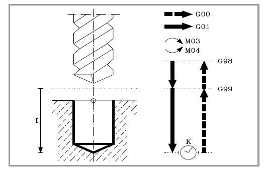
G98 一旦孔钻削完毕，刀具退回到初始平面。
G99 一旦孔钻削完毕，刀具退回到参考平面。
[ X/Y±5.5 ] 加工点坐标
是可选项，用于定义主平面的轴运动到刀具的加工点。
该点可以在笛卡尔坐标系或极坐标系编写，根据机床当时用 G90 或 G91，该坐标可以是绝对坐标或增量坐标。
[ Z±5.5 ] 参考平面
定义参考平面的坐标。可以用绝对坐标或增量坐标编写，在这种情况下是相对于初始平面的。
如果没有编写， CNC 将采用刀具的当前位置作为参考平面。
[ I±5.5 ] 钻削深度
定义总的钻削深度。它可以用绝对坐标或相对坐标编写。在这种情况下是相对于参考平面的。
[ K5 ] 停顿
定义在每次钻入后到开始退回停顿时间， 以百分之一秒为单位。如果没有编写，
CNC 将采用 "K0"。
该循环完成连续的钻削加工直到达到最终的编程坐标。然后执行在孔底部的停顿。
在笛卡尔坐标系工作时，程序段的基本结构如下：
G82 G98/G99 X Y Z I K
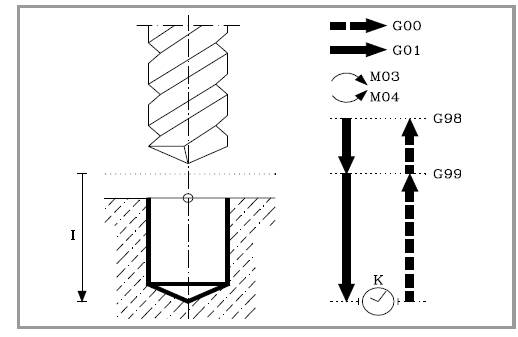
[ G98/G99 ] 退回平面
G98 一旦孔钻削完毕，刀具退回到初始平面。
G99 一旦孔钻削完毕，刀具退回到参考平面。
[ X/Y±5.5 ] 加工点坐标
是可选项，用于定义主平面的轴运动到刀具的加工点。
该点可以在笛卡尔坐标系或极坐标系编写，根据机床当时用 G90 或 G91，该坐标可以是绝对坐标或增量坐标。
[ Z±5.5 ] 参考平面
定义参考平面的坐标。可以用绝对坐标或增量坐标编写，在这种情况下是相对于初始平面的。如果没有编写， CNC 将采用刀具的当前位置作为参考平面。
[ I±5.5 ] 钻削深度
定义总的钻削深度。它可以用绝对坐标或相对坐标编写。在这种情况下是相对于参考平面的。
[ K5 ] 停顿
定义在每次钻入后到开始退回停顿时间， 以百分之一秒为单位。如果没有编写，
CNC 将采用 K0
该循环完成连续的钻削加工直到达到最终的编程坐标。
在每次钻削后，刀具退回到参考平面。
在笛卡尔坐标系工作时，程序段的基本结构如下：
G83 G98/G99 X Y Z I J
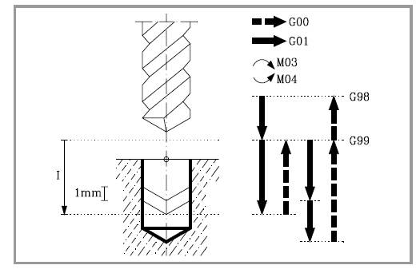
[ G98/G99 ] 退回平面
G98 一旦孔钻削完毕，刀具退回到初始平面。
G99 一旦孔钻削完毕，刀具退回到参考平面。
[ X/Y±5.5 ] 加工点坐标
是可选项，用于定义主平面的轴运动到刀具的加工点。
该点可以在笛卡尔坐标系或极坐标系编写，根据机床当时用 G90 或 G91，该坐标可以是绝对坐标或增量坐标。
[ Z±5.5 ] 参考平面
定义参考平面的坐标。可以用绝对坐标或增量坐标编写，在这种情况下是相对于初始平面的。
如果没有编写， CNC 将采用刀具的当前位置作为参考平面。
[ I±5.5 ] 每次钻削的深度
定义沿主平面的纵向轴每次钻入的步长值
[ J4 ] 钻削多次后退回到开始平面
定义钻孔的步数。可以用 1 到 9999 之间的值编写
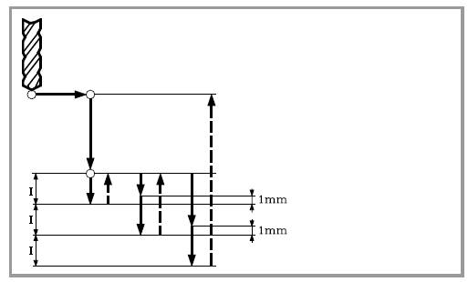
该循环在指定点完成铰削加工直到达到最终的编程坐标。
可以编写在加工孔底部的停顿。
在笛卡尔坐标系工作时，程序段的基本结构如下：
G85 G98/G99 X Y Z I K
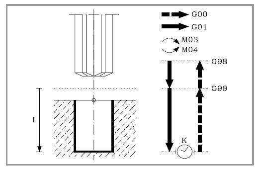
[ G98/G99 ] 退回平面
G98 一旦孔铰削完毕，刀具退回到初始平面。
G99 一旦孔铰削完毕，刀具退回到参考平面。
[ X/Y±5.5 ] 加工点坐标
是可选项，用于定义主平面的轴运动到刀具的加工点。
该点可以在笛卡尔坐标系或极坐标系编写，根据机床当时用 G90 或 G91，该坐标可以是绝对坐标或增量坐标。
[ Z±5.5 ] 参考平面
定义参考平面的坐标。可以用绝对坐标或增量坐标编写，在这种情况下是相对于初始平面的。
如果没有编写， CNC 将采用刀具的当前位置作为参考平面。
[ I±5.5 ] 铰削深度
可以用绝对坐标或增量坐标编写，在这种情况下是相对于参考平面的。
[ K5 ] 停顿
定义停顿时间，用百分之一秒为单位，指在每次铰入后到退回开始前的时间。如果没有编写，CNC 将采用 "K0"
该循环在指定点完成镗削加工直到达到最终的编程坐标。
可以编写在加工孔的底部的停顿。
在笛卡尔坐标系工作时，程序段的基本结构如下：
G86 G98/G99 X Y Z I K
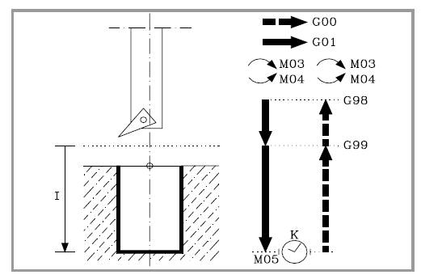
[ G98/G99 ] 退回平面
G98 一旦孔镗削完毕，刀具退回到初始平面。
G99 一旦孔镗削完毕，刀具退回到参考平面。
[ X/Y±5.5 ] 加工点坐标
是可选项，用于定义主平面的轴运动到刀具的加工点。
该点可以在笛卡尔坐标系或极坐标系编写，根据机床当时用 G90 或 G91，该坐标可以是绝对坐标或增量坐标。
[ Z±5.5 ] 参考平面
定义参考平面的坐标。可以用绝对坐标或增量坐标编写，在这种情况下是相对于初始平面的。
如果没有编写， CNC 将采用刀具的当前位置作为参考平面。
[ I±5.5 ] 镗削深度
定义镗削深度。可以用绝对坐标或增量坐标编写，在这种情况下是相对于参考平面的。
[ K5 ] 停顿
定义停顿时间，用百分之一秒为单位，指在每次镗入后到退回开始 前的时间。如果没有编写，CNC 将采用 "K0"。
该循环在指定点执行矩形型腔加工直到达到最终的编程坐标。
另外还可以编写铣削走刀和进给率，最终的精加工走刀和相应的进给率。
为了在加工型腔的内壁时获得好的表面质量， 在每个切削操作期间，CNC 将在加工的最后走刀施加切向进入和切向退出。
在笛卡尔坐标系工作时，程序段的基本结构如下：
G87 G98/G99 X Y Z I J K B C D H L V
[ G98/G99 ] 退回平面
G98 一旦型腔加工完毕，刀具退回到初始平面。
G99 一旦型腔加工完毕，刀具退回到参考平面。
[ X/Y±5.5 ] 加工点坐标
是可选项，用于定义主平面的轴运动到刀具的加工点。
该点可以在笛卡尔坐标系或极坐标系编写，根据机床当时用 G90 或 G91，该坐标可以是绝对坐标或增量坐标。
[ Z±5.5 ] 参考平面
定义参考平面的坐标。
当用绝对坐标编程时，相对于工件零点，当用增量坐标编程时，相对于开始平面(P.P.)。
如果没有编写，将采用刀具的当前位置作为参考平面。因此开始平面 (P.P.) 和参考平面 (P.R.) 将是相同的
[ I±5.5 ] 加工深度
定义加工深度。
当用绝对坐标编程时 ，是相对于工件零点的，当用相对坐标编程时，是相对于开始平面 (P.P.) 的。
[ J±5.5 ] 型腔沿横坐标的一半宽度
定义型腔中心到边沿横坐标的距离。符号表示型腔加工的方向。
[ K5.5 ] 型腔沿纵坐标的一半宽度
定义型腔中心到边沿纵坐标的距离。
[ B±5.5 ] 走刀量
定义沿纵向轴的切削深度。
如果用正号编写，整个循环将用相同的加工走刀，该走刀等于或小于编写的走刀。
如果用负号编写，整个型腔将用给定的走刀，最后一次走刀例外，它用于加工剩余的量。
[ C±5.5 ] 铣削走刀
定义沿主平面的铣削走刀。
如果该数值为正，整个循环将用相同的加工走刀，该走刀等于或小于编写的走刀。
如果该数值为负，整个型腔将用给定的走刀，最后一次走刀例外，它用于加工剩余的量。
如果没有编写，CNC 将采用所选择刀具直径的 3/4 作为该数值。
如果编写的数值大于刀具直径，CNC 将发送相应的错误信息。
如果编写了数值 0，CNC 将显示相应的错误。
[ D5.5 ] 参考平面
定义参考平面和所加工型腔所在表面之间的距离。
在第一次切深操作中，该量将添加在增量深度“B”上。如果没有编写，将采用数值 0
[ H.5.5 ] 精加工走刀的进给率
定义精加工走刀的工作进给率。
如果没有编写或编写了数值 0，将采用加工时的工作进给率
[ L±5.5 ] 精加工余量
定义沿主平面的精加工走刀的数值。
如果该数值为正，精加工走刀用方角 （G07) 完成。
如果该数值为负，精加工走刀用圆角 (G05) 完成。
[ V.5.5 ] 刀具切入进给率
定义刀具切入的进给率。
如果没有编写或编写的数值为 0 ， CNC 将采用平面进给率 (F) 的 50% 。
该循环在指定点执行圆柱形型腔加工直到达到最终的编程坐标。
另外还可以编写铣削走刀和进给率，最终的精加工走刀和相应的进给率。
在笛卡尔坐标系工作时，程序段的基本结构如下：
G88 G98/G99 X Y Z I J B C D H L V
[ G98/G99 ] 退回平面
G98 一旦型腔加工完毕，刀具退回到初始平面。
G99 一旦型腔加工完毕，刀具退回到参考平面。
[ X/Y±5.5 ] 加工点坐标
是可选项，用于定义主平面的轴运动到刀具的加工点。
该点可以在笛卡尔坐标系或极坐标系编写，根据机床当时用 G90 或 G91，该坐标可以是绝对坐标或增量坐标。
[ Z±5.5 ] 参考平面
定义参考平面的坐标。可用绝对坐标编程时或用增量坐标编程，在这种情况下是相对于初始平面的。如果没有编写，将采用刀具的当前位置作为参考平面。
[ I±5.5 ] 加工深度
定义加工深度。 可用绝对坐标编程时或用增量坐标编程，在这种情况下是相对于参考平面的
[ J±5.5 ] 型腔半径
定义型腔的半径。符号表示加工型腔的方向
[ B±5.5 ] 走刀量
定义沿纵向轴到主平面的切削走刀。
. 如果该值是正的，整个循环将用相同的加工走刀，该走刀等于或小于编写的走刀。
. 如果该值是负值，整个型腔将用给定的走刀，最后一次走刀例外，它用于加工剩余的量。
[ C±5.5 ] 铣削走刀
定义沿主平面的铣削走刀。
. 如果该值是正的，整个循环将用相同的加工走刀，该走刀等于或小于编写的走刀。
. 如果该值是负的，整个型腔将用给定的走刀，最后一次走刀例外，它用于加工剩余的量。
如果没有编写，CNC 将采用所选择刀具直径的 3/4 作为该数值。
如果编写的数值大于刀具半径，CNC 将发送相应的错误信息。
如果编写了数值 0，CNC 将显示相应的错误。
[ D5.5 ] 参考平面
定义参考平面和所加工型腔所在表面之间的距离。
在第一次切深操作中，该量将添加在增量深度“B”上。如果没有编写，将采用数值 0
[ H5.5 ] 精加工走刀的进给率
定义精加工走刀的工作进给率。
如果没有编写或编写了数值 0，将采用加工时的工作进给率。
[ L5.5 ] 精加工余量
定义沿主平面的精加工走刀的数值。
如果没有编写或编写的数值为 0 ，将不进行精加工。
[ V.5.5 ] 刀具切入进给率
定义刀具切入的进给率。
如果没有编写或编写的数值为 0 ， CNC 将采用平面进给率 (F) 的 50%
该循环在指定点完成镗削加工直到达到最终的编程坐标。
可以编写在加工孔底部的停顿。
在笛卡尔坐标系工作时，程序段的基本结构如下：
G89 G98/G99 X Y Z I K
[ G98/G99 ] 退回平面
G98 一旦孔镗削完毕，刀具退回到初始平面。
G99 一旦孔镗削完毕，刀具退回到参考平面。
[ X/Y±5.5 ] 加工点坐标
是可选项，用于定义主平面的轴运动到刀具的加工点。
该点可以在笛卡尔坐标系或极坐标系编写，根据机床当时用 G90 或 G91，该坐标可以是绝对坐标或增量坐标。
[ Z±5.5 ] 参考平面
定义参考平面的坐标。可以用绝对坐标或增量坐标编写，在这种情况下是相对于初始平面的。如果没有编写， CNC 将采用刀具的当前位置作为参考平面。
[ I±5.5 ] 加工深度
定义镗削的深度。 可以用绝对坐标或增量坐标编写，在这种情况下是相对于参考平面的。
[ K5 ] 停顿
定义停顿时间，用百分之一秒为单位，指在每次镗入后到退回开始 前的时间。如果没有编写，CNC 将采用 "K0"。
编程格式如下：
A (+/- 5.5) 加工路径的角度
定义加工路径和横坐标轴之间形成的夹角。 它以度为单位，如果没有编写，采用A=0 。
X (+/- 5.5) 加工路径的长度
定义加工路径的长度。
I (5.5) 加工间距定义相邻加工点间的距离 .
K (5) 加工操作数
定义在这部分的总的加工操作的数目，包括加工定义点。
由于实际加工可以用 X I K 中任意两个点定义，因此 CNC 允许下列定义组合 ：XI, XK, IK。然而，如果定义 XI 组合格式，注意应保证加工操作数为整数，否则 CNC 将显示相应的错误代码 .
编程格式如下 :
A (+/- 5.5) 加工路径与横坐标轴间的夹角
定义加工路径和横坐标轴之间形成的夹角 . 它以度为单位表示 . 如果没有编写，采用 A=0 .
B (+/- 5.5) 路径间夹角
定义两个加工路径间形成的角度 . 它以度为单位表示 . 如果没有编写，采用 B = 90 .
X (5.5) 沿横坐标轴加工路径的长度定义对应于横坐标轴的加工路径长度 .
I (5.5) 沿横坐标轴的加工间距定义沿横坐标轴相邻加工点之间的距离 .
K (5) 沿横坐标轴的加工操作数定义沿横坐标总的加工操作数，包括加工定义点 .
由于实际加工对应于横坐标可以用 X I K 中任意两个点定义，因此 CNC 允许下列定义组合 ：XI, XK, IK. 然而，如果定义 XI 组合格式，注意应保证加工操作数为整数，否则 CNC 将显示相应的错误代码 .
Y (5.5) 沿纵坐标轴加工路径的长度
定义对应于纵坐标轴的加工路径长度 .
J (5.5) 沿纵坐标轴的加工间距
定义沿纵坐标轴相邻加工点之间的距离
D (5) 沿纵坐标轴的加工操作数
定义沿纵坐标总的加工操作数，包括加工定义点 .
由于实际加工对应于纵坐标可以用 Y J D 中任意两个点定义，因此 CNC 允许下列定义组合 YJ, YD, JD. 然而，如果定义 YJ 组合格式，注意应保证加工操作数为整数，否则 CNC 将显示相应的错误代码
|
G61: 沿矩形模式的多重加工 |
编程格式如下 :
A (+/- 5.5) 加工路径与横坐标轴间的夹角
定义加工路径和横坐标轴之间形成的夹角 . 它以度为单位表示 . 如果没有编写，采用 A=0 .
B (+/- 5.5) 路径间夹角
定义两个加工路径间形成的角度 . 它以度为单位表示 . 如果没有编写，采用 B = 90 .
X (5.5) 沿横坐标轴加工路径的长度定义对应于横坐标轴的加工路径长度 .
I (5.5) 沿横坐标轴的加工间距定义沿横坐标轴相邻加工点之间的距离 .
K (5) 沿横坐标轴的加工操作数定义沿横坐标总的加工操作数，包括加工定义点 .
由于实际加工对应于横坐标可以用 X I K 中任意两个点定义，因此 CNC 允许下列定义组合 ：XI, XK, IK. 然而，如果定义 XI 组合格式，注意应保证加工操作数为整数，否则 CNC 将显示相应的错误代码 .
Y (5.5) 沿纵坐标轴加工路径的长度
定义对应于纵坐标轴的加工路径长度 .
J (5.5) 沿纵坐标轴的加工间距
定义沿纵坐标轴相邻加工点之间的距离
D (5) 沿纵坐标轴的加工操作数
定义沿纵坐标总的加工操作数，包括加工定义点 .
由于实际加工对应于纵坐标可以用 Y J D 中任意两个点定义，因此 CNC 允许下列定义组合 YJ, YD, JD. 然而，如果定义 YJ 组合格式，注意应保证加工操作数为整数，否则 CNC 将显示相应的错误代码
|
G62: 沿网格模式的多重加工 |
编程格式如下 :
A (+/- 5.5) 加工路径与横坐标轴间的夹角
定义加工路径和横坐标轴之间形成的夹角 . 它以度为单位表示 . 如果没有编写，采用 A=0.
B (+/- 5.5) 路径间夹角
定义两个加工路径间形成的角度 . 它以度为单位表示 . 如果没有编写，采用 B = 90
X (5.5) 沿横坐标轴加工路径的长度
定义沿横坐标轴相邻加工点之间的距离 .
I (5.5) 沿横坐标轴的加工间距
定义沿横坐标轴相邻加工点之间的距离 .
K (5) 沿横坐标轴的加工操作数
定义沿横坐标总的加工操作数，包括加工定义点 .
由于实际加工对应于横坐标可以用 X I K 中任意两个点定义，因此 CNC 允许下列定义组合 ：XI, XK, IK. 然而，如果定义 XI 组合格式，注意应保证加工操作数为整数，否则 CNC 将显示相应的错误代码 ..
Y (5.5) 沿纵坐标轴加工路径的长度
定义对应于纵坐标轴的加工路径长度 .
J (5.5) 沿纵坐标轴的加工间距
定义沿纵坐标轴相邻加工点之间的距离 .
D (5) 沿纵坐标轴的加工操作数
定义沿纵坐标总的加工操作数，包括加工定义点 .
由于实际加工对应于纵坐标可以用 Y J D 中任意两个点定义，因此 CNC 允许下列定义组合 YJ, YD, JD. 然而，如果定义 YJ 组合格式，注意应保证加工操作数为整数，否则 CNC 将显示相应的错误代码 .
|
G63: 沿圆周模式多重加工 |
编程格式如下 :
X (+/- 5.5) 沿横坐标从加工起始点到圆心的距离
定义沿横坐标从起始点到圆心的距离 .
Y (+/- 5.5) 沿纵坐标从加工起始点到圆心的距离
定义沿纵坐标从起始点到圆心的距离 .
利用参数 X 和 Y 定义圆心就如同在圆弧插补 (G02, G03) 中用 I 和 J 一样 .
I (+/- 5.5) 相邻加工点间隔角度
定义相邻加工操作点的间隔角度 . 当以 G00 或 G01 从某点移动到另一点时，符号表示方向，+ 表示逆时针 , - 表示顺时针 .
K (5) 加工操作总数
定义沿着圆周总的加工操作数，包括加工定义点 .
在多重加工定义程序段中，编写 I 或 K 就足够了 . 然而，如果在多重加工中用 K 编程，其中点之间的运动用 G00 或 G01, 加工将以逆时针方向完成 .
C (0/1/2/3) 点到点运动类型
指出在加工点之间如何运动 . 如果没有编写将采用 C=0 .
C=0: 快速进给率运动 (G00).
C=1: 直线插补运动 (G01).
C=2: 顺时针圆弧插补运动 (G02)
C=3: 逆时针圆弧插补运动 (G03)
F (5.5) 点到点之间移动进给率
定义点到点之间移动进给率 . 很明显，只使用于 C 不为零时 . 如果没有编写，将采用 F0 ，选择由轴机床参数 MAXFEED 定义的最大进给率
|
G64: 沿圆弧模式的多重加工 |
X (+/- 5.5) 沿横坐标从加工起始点到圆心的距离
定义沿横坐标从起始点到圆心的距离 .
Y (+/- 5.5) 沿纵坐标从加工起始点到圆心的距离
定义沿纵坐标从起始点到圆心的距离 .
利用参数 X 和 Y 定义圆心就如同在圆弧插补 (G02, G03) 中用 I 和 J 一样 .
B (5.5) 路径夹角 ( 从加工起点到终点 )
定义加工路径的角度区间，以度为单位表示 .
I (+/- 5.5) 相邻加工点间隔角度
定义相邻加工操作点的间隔角度 . 当以 G00 或 G01 从某点移动到另一点时，符号表示方向，+ 表示逆时针 , - 表示顺时针 .
K (5) 加工操作总数
定义沿着圆弧总的加工操作数，包括加工定义点 .
在多重加工定义程序段中，编写 I 或 K 就足够了 . 然而，如果在多重加工中用 K 编程，其中点之间的运动用 G00 或 G01, 加工将以逆时针方向完成 .
C (0/1/2/3) 点到点运动类型 .
指出在加工点之间如何运动 . 如果没有编写将采用 C=0.
C=0: 快速进给率运动 (G00).
C=1: 直线插补运动 (G01).
C=2: 顺时针圆弧插补运动 (G02)
C=3: 逆时针圆弧插补运动 (G03)
F (5.5) 点到点之间移动进给率
定义点到点之间移动进给率 . 很明显，只使用于 C 不为零时 . 如果没有编写，将采用 F0 ，选择由轴机床参数 MAXFEED 定义的最大进给率 .
|
G65: 用圆弧 - 弦的方式进行多重加工 |
该功能允许激活通过圆弧 - 弦编程的点执行加工 . 且只执行一个加工操作，编程格式如下 :
X (+/- 5.5) 沿横坐标从加工起始点到圆心的距离
定义沿横坐标从起始点到圆心的距离 .
Y (+/- 5.5) 沿纵坐标从加工起始点到圆心的距离
定义沿纵坐标从起始点到圆心的距离 .
利用参数 X 和 Y 定义圆心就如同在圆弧插补 (G02, G03) 中用 I 和 J 一样 .
A (+/- 5.5) 弦的夹角
定义由弦的垂直平分线和横坐标轴形成的角度，以度为单位表示 .
I (+/- 5.5) 加工操作间距 ( 弦长 )
定义弦的长度 . 当以 G00 或 G01 从某点移动到另一点时，符号表示方向，+ 表示逆时针 , - 表示顺时针 .
C (0/1/2/3) 点到点运动类型 .
指出在加工点之间如何运动 . 如果没有编写将采用 C=0.
C=0: 快速进给率运动 (G00).
C=1: 直线插补运动 (G01).
C=2: 顺时针圆弧插补运动 (G02)
C=3: 逆时针圆弧插补运动 (G03)
F (5.5) 点到点之间移动进给率
定义点到点之间移动进给率 . 很明显，只使用于 C 不为零时 . 如果没有编写，将采用 F0 ，选择由轴机床参数 MAXFEED 定义的最大进给率
| | | | | | | | | | | | | | | | | | | | | | | | | |